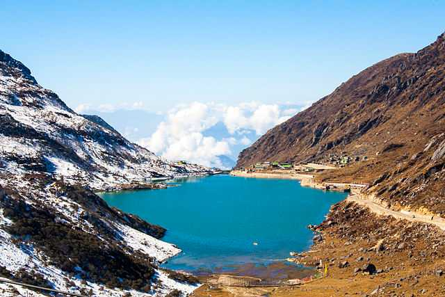

Gangtok
Gangtok
Incredibly alluring, pleasantly boisterous and wreathed in clouds - Gangtok, the capital of Sikkim, is one of the most popular hill stations in India. Lying at the height of 1650 m above sea level, the town during its bright sunny days offers spectacular views of Mt. Kanchenjunga. Gangtok is a base for adventure enthusiasts comprising of trekkers and campers to the Himalayan mountain ranges. Dzongri Trek, Varsey/Barsey Trek, and Tholung Trek are among the most popular treks departing from Gangtok.
The possibility of paragliding and hang gliding is also not far from Gangtok. The capital city serves as an excellent starting point for mountain biking excursions. During the months of March to Mid-May, blooming of wild Rhododendrons transform the surrounding regions in vast fields of colourful carpets.
Gangtok has an eclectic nightlife as well. Its popular MG Road is lined with trendy restaurants and pubs that stay open until 11 p.m. The location is also ideal for shopaholics, and with shops open until late at night, tourists have more time to purchase Tibetan handicrafts, woollens, and tea products. Read more about Shopping in Gangtok.
Gangtok and its surrounding regions are abundant in natural beauty and have various natural attractions such as the Tsomgo Lake, Ban Jhakri falls, Tashi viewpoint and more. Other places to visit include many famous religious sites such as the Enchey Monastery, Ganesh Tok, Do Drul Chorten Rumtek Monastery, etc. Also, river Teesta is one of the best spots for white water rafting in North East India.
Its name meaning hill-top, Gangtok can be safely said to be one of the most beautiful hill stations in the country. With everything in just the right amount from a blend of cultural identities to urbanisation, Gangtok is a breathing and dynamic bit of paradise of the northeast. Whether one is looking for a family vacation, a romantic getaway, adventure tourism, or simply a peaceful place to relax and unwind in the midst of nature, Gangtok, Sikkim has it all.
Major Tourist Attractions:
- Nathula Pass
- MG Road, Gangtok
- Tsomgo Lake
- Rumtek Monastery
- Ganesh Tok
- Namgyal Institute of Tibetology
Recommended Tours

Himachal Pradesh

Uttarakhand

Gujarat
How to Reach: The nearest airport to Gangtok is in Bagdogra and one can hail a cab or taxi from there to Gangtok. The nearest railway station from Gangtok is in Siliguri, which is directly connected to the major cities of the country. Taxi and state bus services are available from Siliguri to Gangtok.
Best Time to Visit: The best time to visit Gangtok is from late September to November and March to June. These autumn and spring-summer months experience a pleasant climate which is ideal for sightseeing. Between October and February, although the temperatures go below 0-degree Celcius, Gangtok takes on a surreal charm, opening a whole wide world of amazing activities. It is best to avoid a visit to this place during the monsoon months of July to early September since the heavy rainfall leads to landslides which may cause a lot of inconveniences.
Watch on YouTube: